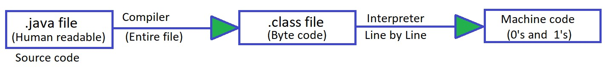
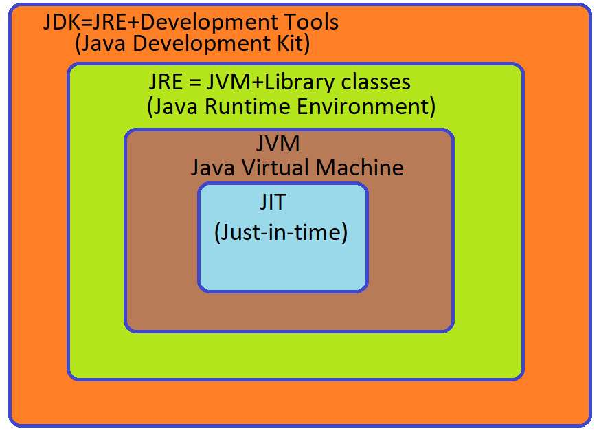
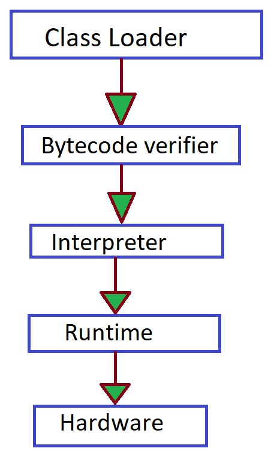
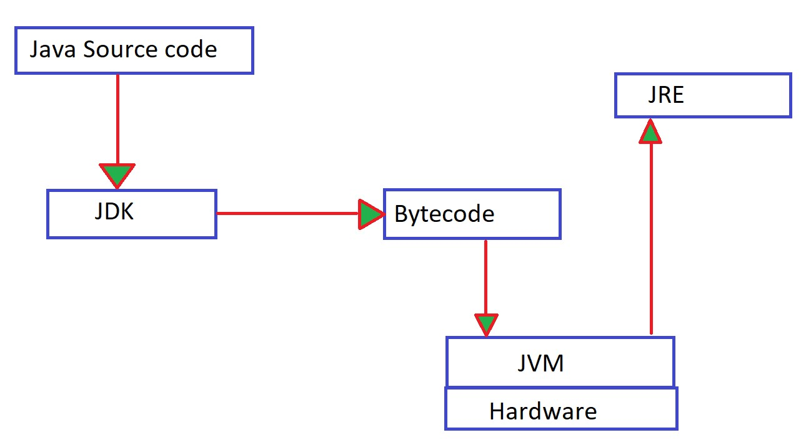

Introduction to Java - Architecture & installation
Q → Why do we use programming language?
A → Machine only understand 0's and 1's, for humans it is very difficult to instruct
computer in 0's and 1's so to avoid this issude we write our code in human readable language
(programming language).
"Java is one of the programming language".

- The code written in java is human readable and it is saved using extension .java
- This ode is known as source code
- Java Compiler
- Java compiler converts the source code into byto code which have the extension .class
- This byte code not directly run on system
- We need JVM (Java Virtual Machine) to run this
- Reason why java is platform independent
- Java Interpreter
- Converts byte code to machine code i.e. 0's and 1's
- It translate the byte code line by line to machine code
- More about platform independent
- It means that byte code can run on all operating system
- We need to convert source code to machine code so computer can understand it.
- Compiler helps in doing this by turning it into executable code.
- This executable code is a set of instruction's for the computer
- After compiling C/C++ code we get .ese file which is platform dependent.
- In java we get byte code. JVM converts this to machine code.
- Java is platform independent but JVM is platform dependent.
Architecture of java
- JDK
- Provide environment to develop and run the java program.
- It is a package that includes :-
- Development tools to provide an environment to run your program.
- IRE :- to execute your program
- A compiler javac
- Docs generator javadoc
- Interpreter/loader
- JRE
- It is an installation package that provide environment to only run the program.
- It consist of :-
- Deployment technology
- User interface toolkit
- Intergration libraries
- Base libraries
- JVM :- java virtal machine
- Compiler Time

- After we get the .class file the next thing happen at runtime :
- Class loader loads all classes needed to execute the program
- JVM sends code to bytecode berifies to check the format of code.
- After we get the .class file the next thing happen at runtime :
- Runtime :-
- (How JVM works) class loader
- Loading
- Read .class file and generate binary data.
- an object of this class is created in heap.
- Linking
- JVM verifies the .class file
- allocates memory for the class variables and default value
- replace symbolic references from the type with direct reference.
- Initialization
- All static variables are assigned with their values defined in the code and static back.
- JVM contains the stack and heap memory locations.
- Loading
- (How JVM works) class loader
- JVM Execution
- Interpreter
- Line by execution
- When one method is called many times it will interpret again and again
- JIT
- Those methods that are repeated. JIT provides direct machine code so that interpretation is not required.
- Makes ececution faster
- Garbage collector
- Interpreter
Working of Java Architecture
Tools required to run java
- JDK
- intellij